174人感染：日本豪华邮轮海上隔离的一周
原文链接 备份链接 2月5日，因船上有乘客被检验出新冠病毒感染，停靠在日本横滨港口的“钻石公主号”上的3600多人开始了14天的海上隔离。截至2月12日，这艘邮轮上的确诊感染者已达174人，远超日本本土的确诊感染总数，“钻石公主号”事件已 …

每天一条独家原创视频
这是一艘除了泰坦尼克号，
史上最倒霉的豪华游轮“钻石公主号”。
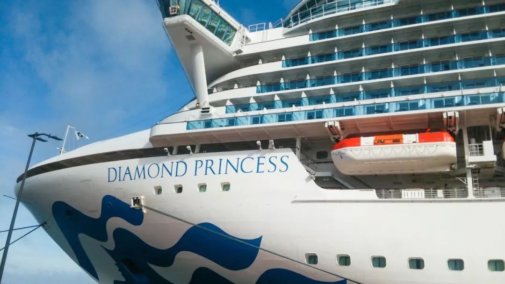

登上钻石公主号表演的魔术师陈日升
2月1日，
一名已下船的香港乘客被检出新型肺炎，
2月5日起，
船上船员和乘客共3711人被海上隔离，
截至2月13日，
共计218人确诊新型肺炎，
成了最严重的”海外疫区”。

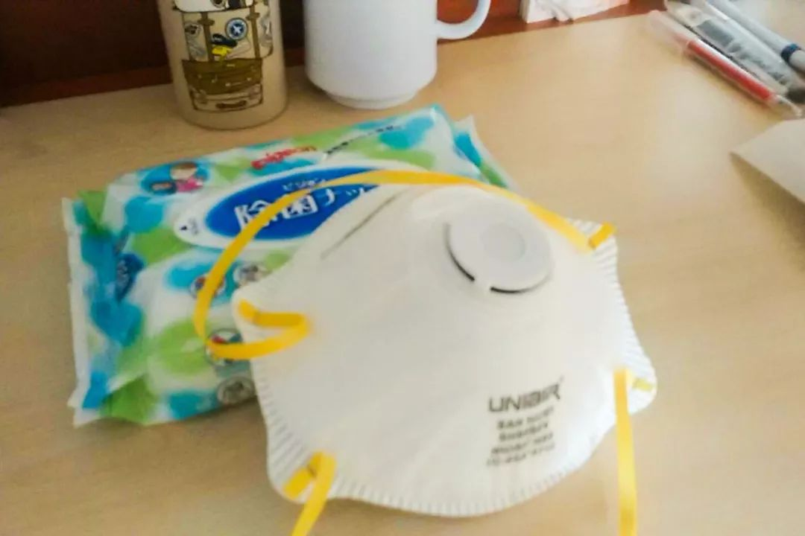
乘客只能待在自己的舱房中，
三餐由工作人员配送到房门口，
每天各楼层轮流到甲板放风1.5小时，
随着隔离时间拉长，游轮环境日趋恶劣，
有乘客甚至床单超过一周没更换，
餐食也从西餐变成泡面和干粮。
医务室每天大排长龙，
能够接受筛检的人数，
却不到全船的十分之一，
船员和乘客们
纷纷在网络留言或录视频向外界求救：
“这样下去没感染的迟早被感染，
难道非得确诊新型肺炎才能下船吗？
下一个会不会是我？”
然而下船就医真的是更好的选择吗？
目前至少近30名美国确诊病患被送往日本医院，
他们的反馈居然是：
可能待在船上还比较好些……
***************撰文 ******************************白汶平***************
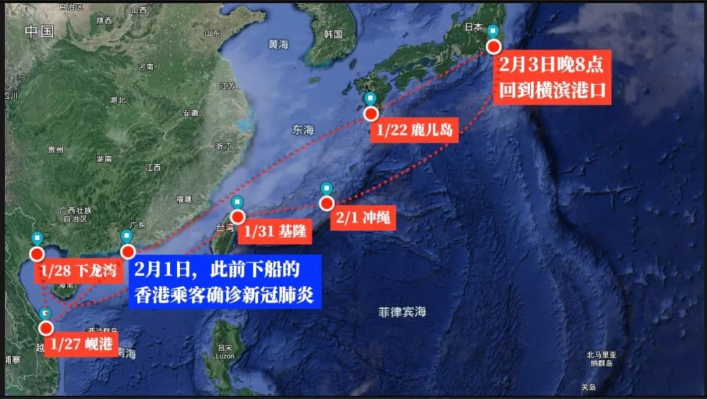
让人满心期待的海上之旅，在1月25日变了调。一名香港80岁乘客下船后出现不适，香港政府2月1日证实，这名乘客确诊新型肺炎。2月3日，钻石公主号紧急加速返回日本横滨港口，当时乘客都还不清楚发生什么事。
日本政府决定对船上所有人进行快筛，但人数众多根本无法一一检验，因此日本政府2月5日下令，即日起进行海上隔离，让原本收拾好行李要下船的乘客们非常错愕。
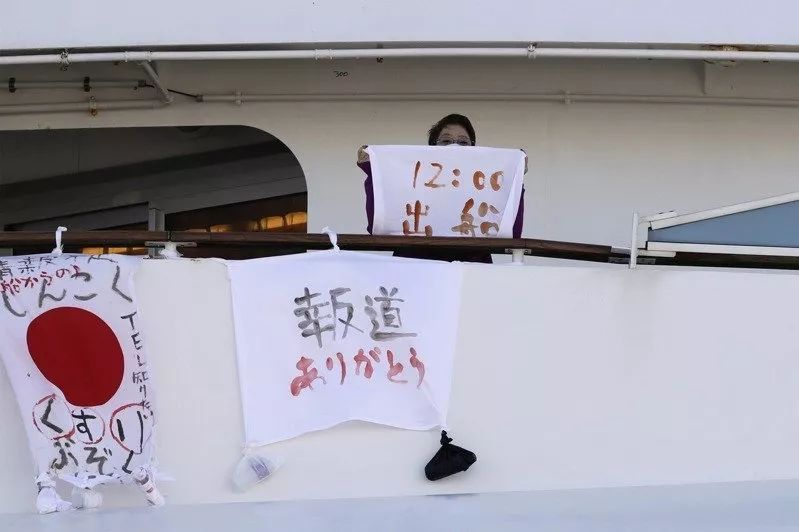
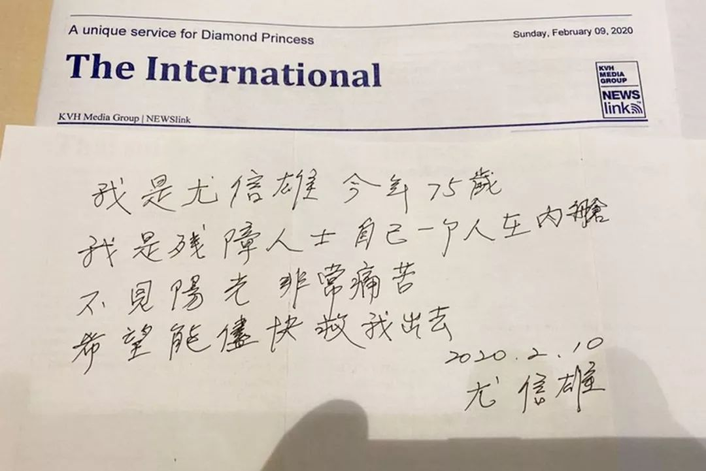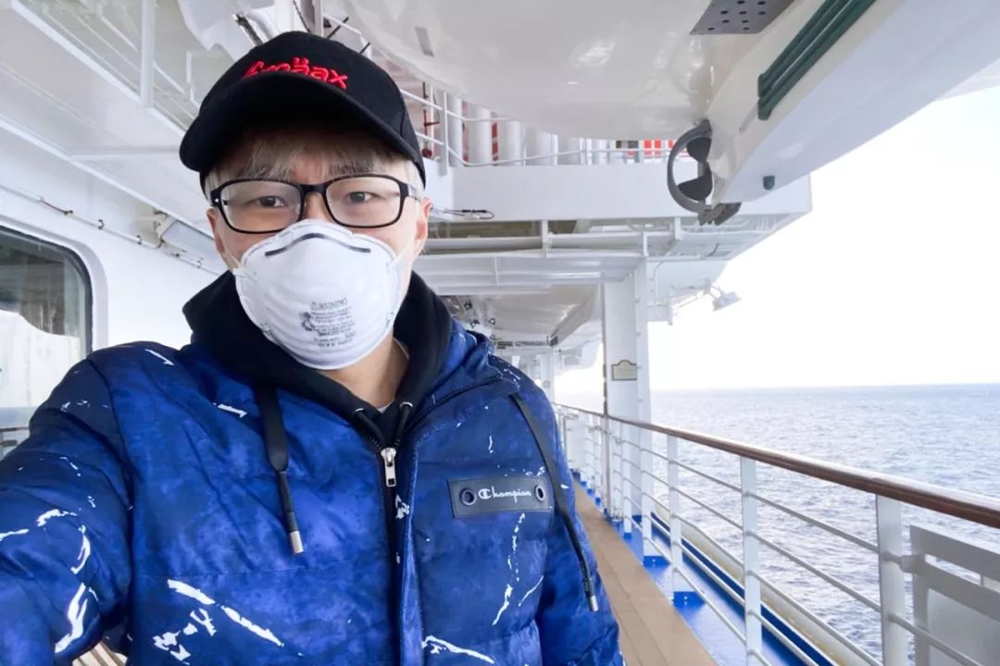
很多被困游客纷纷通过直播向外界求助，一条联系上了一位在航线途中登船的魔术师陈日升，通话期间，陈日升声音沙哑，不断咳嗽，但他没有发烧，始终不能接受检测，只能先在房内多喝水、多休息…..
以下为陈日升的自述。
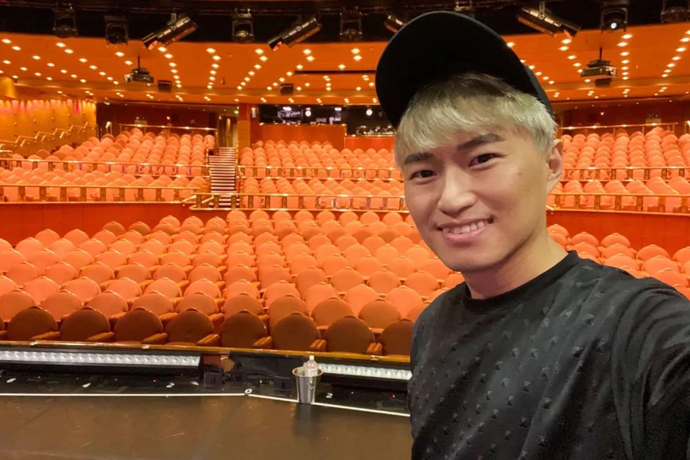
魔术师1月27日满怀期待登船表演，如今却被隔离

陈日升在游轮上的剧场表演，照片拍摄于1月29日
我是魔术师陈日升，负责船上的魔术表演。1月26日我从台湾飞到越南登船，但其实前一天，1月25日船停靠香港时，就有一批香港乘客下船了，那时候我们都不知道有人被感染新型肺炎。行程照样进行，1月31日船停在台湾基隆港的时候，大家也下船去玩、去吃东西，都没有觉得怎么样。
没想到在2月1日，一位80岁香港乘客出现阳性反应，确诊新型肺炎。我本来2月3日就把东西收拾好了，结果船上临时通知大家都不能下船，要做检疫。


陈日升居住的客舱房是专属表演者的单人间
我住的是专门给工作人员住的房间，陈设简单，就一张单人床，空间比较小，从隔离到现在，我床单都没换，不过衣服都有洗，我有洗衣液，反正船上很干，衣服洗好挂着隔天就干了。

每天船上定时安排各楼层的人外出到甲板放风1.5小时，横滨大概气温是5到8度，有点冷，上周六（2月8日）我吃完午饭就到甲板走走，每个人都规定要戴口罩，吹着海风，呼吸新鲜空气真的让人比较放松。

那天，我遇到一位80多岁的日本婆婆，拄着拐杖蹒跚地向前走，我突然悲从中来，忍不住哭了，船上大部分都是长辈，他们开开心心来玩，却遇到病毒威胁……

工作人员每天定时会送饭和水，也会配送消毒酒精、口罩、温度计，乘客自己量体温，有发烧就通报，优先做筛检，我体温是36.8度，还算正常。
我一开始很焦虑，最害怕的就是每天早上看手机，醒来一看都是几十例增加，一天四十几例、六十几例等等。
陈日升2月1日在个人网站上贴出求救信息
2月1日的时候，我很焦虑，在个人网站上贴出了求救信息。但现在我都麻痹了，我试着调整心态，告诉自己要保持乐观，多吃点水果，多喝水保持体力。船长每天都会广播鼓励大家，船每隔两天会开到外海，主要是进行水源循环，确保船上有足够的水可以使用。
我有遇到一对日本夫妻，其中，先生是被确诊新型肺炎下船了，但他太太没有症状，他们同住一间房，应该感染可能性是比较高的，但是因为太太都没有发烧，现在也只能继续在船上隔离。
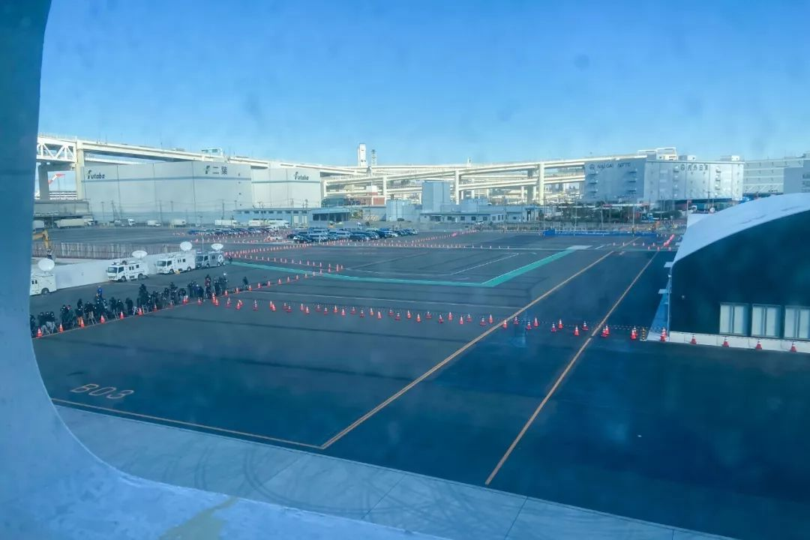
陈日升的舱房外可看见横滨港口每天都有媒体在驻守
我从上船到现在超过2周了，反正被感染的就被感染，赶快下船去治疗，港口边都有救护车在待命，没被感染就是靠抵抗力、意志力撑吧。就算我真的不幸被感染，我想症状也不会太严重，可以被治疗，致死率不是很高吧，我觉得要正面积极一点。

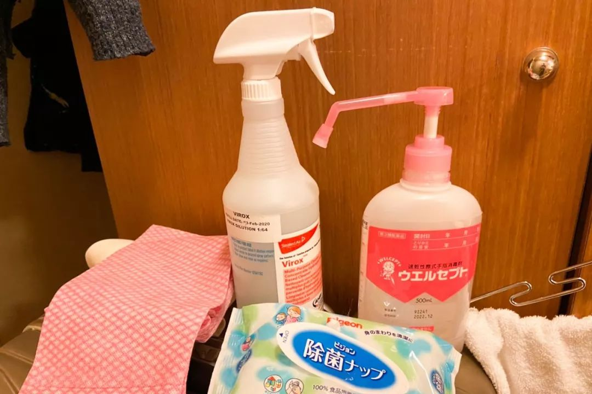
陈日升请在日本的朋友帮忙送物资
我的表演工作原本就是从1月27日到2月4日，所以我只带了9天行李。隔离期间，我的维他命C、保健食品、零食、隐形眼镜都用完了，幸好现在已经开放寄送物资和药品到船上，我托朋友从东京带来一些必需品，他开车过来横滨，港口的工作人员会帮忙把物资送到房间，我拿到东西也才3小时，非常快。

最差的情况就是继续被隔离吧，目前是说隔离到2月19日，但每天都有新的病例出现，不晓得会不会再继续延长隔离时间。对我而言现在就是晚上很难睡，因为我一整天都没做什么事，晚上就睡不着。
经过这次我才体会，当自己处于新闻事件中，才会知道压力，紧张程度真的不是局外人想像得到的，希望大家都可以度过难关平安回家。
豪华游轮变隔离舱
来看看这艘游轮的构造。
钻石公主号（Diamond Princess），隶属美国公主邮轮旗下营运的游轮，船型是Grand级别游轮中最大型的。

带阳台的标准客舱房
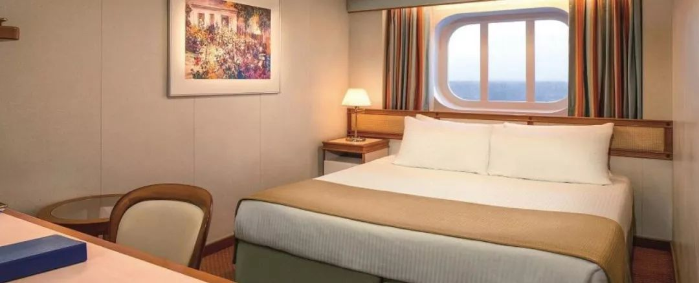
带窗的客舱房
游轮中共有1337间客舱，其中748间客舱设有专用阳台，212间客舱面海带有封闭式窗户，29间无障碍客舱，其余348间是不带窗户的内舱房。

设施包含酒吧、剧场、温泉、游泳池、赌场、艺术画廊、图书馆、咖啡店、餐厅、洗衣店……等，应有尽有。
这次受到新型肺炎影响的就是为期16天的长期行程，而其旅费价格从25万日币（约1.6万人民币）到138万日币（约8.7万人民币），可是一趟奢华之旅。


隔离预计结束日期是2月19日，游轮公司公告这趟行程将全额退费，但游轮公司股价大跌损失惨重，3月、4月的船期几乎已经无法成行。钻石公主号原先在这次行程后，还要前往冲绳等地做做短期旅程，现在也出现退票潮，纵使全船消毒处理，短时间内还是无法让所有人安心。
目前船上的乘客已经在客舱里“关”了超过一周，游轮公司开放免费Wifi，不少乘客透过网络分享自己的隔离生活，也有人借此向外求援。

香港乘客“后排既后排”在论坛上更新近况
论坛开放你问我答
来自香港的游客在论坛上化名“后排既后排”开放你问我答，不定时分享近况，他提到自己原本和家人趁着春节出来玩，并多次强调“我们不是生化武器，大家都有做好自我防护。”希望外界不要给感染者或隔离者贴标签。
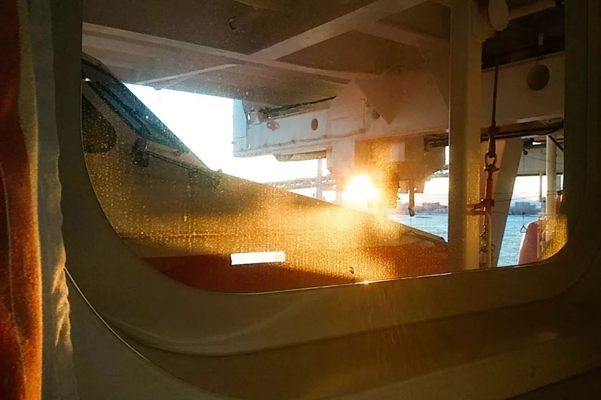
刚开始的一两天，乘客完全不能踏出房门，虽然门没有上锁，但只要一外出，就会立刻被工作人员劝回房内，“后来安排了轮流放风，每天1.5小时，感觉好像犯人。”

这名香港游客说，现在吃的东西由戴上N95口罩的工作人员送进房，不能选择餐食，虽然可以看电视，不过主要都看日本NHK，还有几个印度台、澳洲台、CCTV，选择不多，“船上有提供纸牌和桌上游戏给我们玩。”
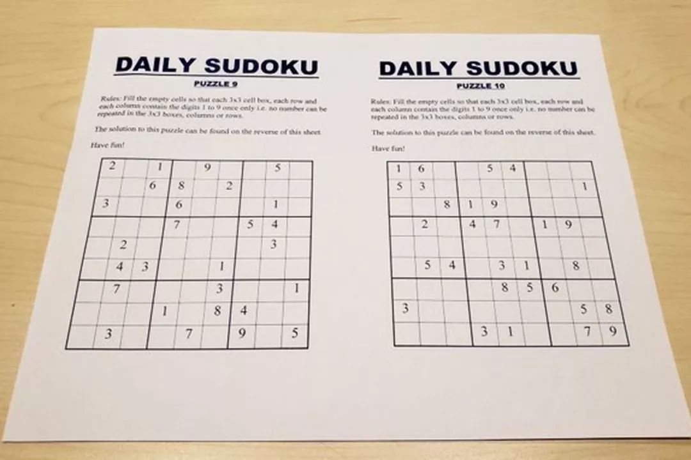
船上发了数独和桌游给乘客解闷
他很忧心，“至今不知道病毒怎么传播，船上又是密闭空间，待在房间也不见得安全，病毒也可能透过中央空调传播吧”。同时也说明目前心情已经比较平静了，偶尔打扫房间，注意个人卫生，静静等到14天隔离期结束。

澳洲乘客网上下单红酒，卖家以无人机送到钻石公主号游轮上
无人机送红酒苦中作乐
澳洲夫妻Dave和Jan，2月7日在网上订购葡萄酒，并询问平台能否免费送到日本，结果平台收到订单后，在几个小时内就透过无人机，成功把两箱葡萄酒送上游轮。
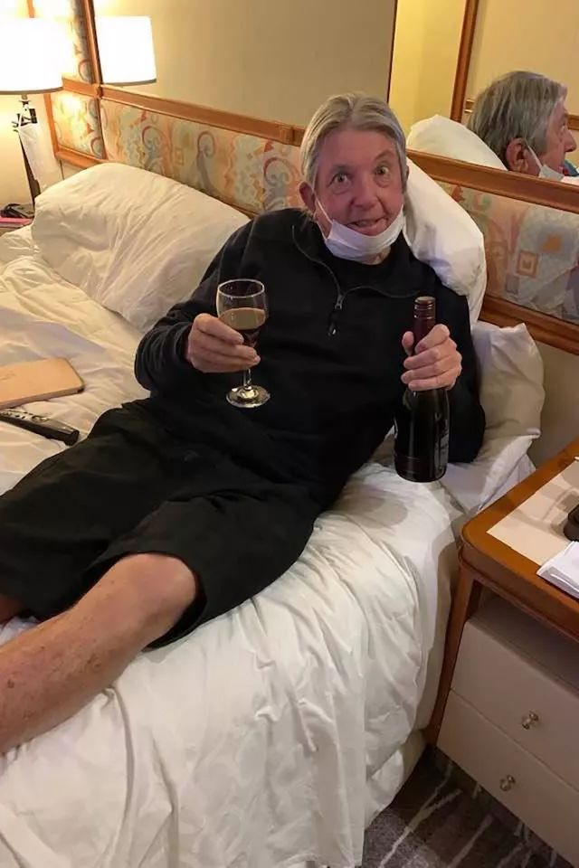
当时港口人员虽有发现无人机，但没有阻止，因此酒还是顺利送达，夫妻俩惊喜收到葡萄酒后，立刻开箱，发照片，享受快乐时光。
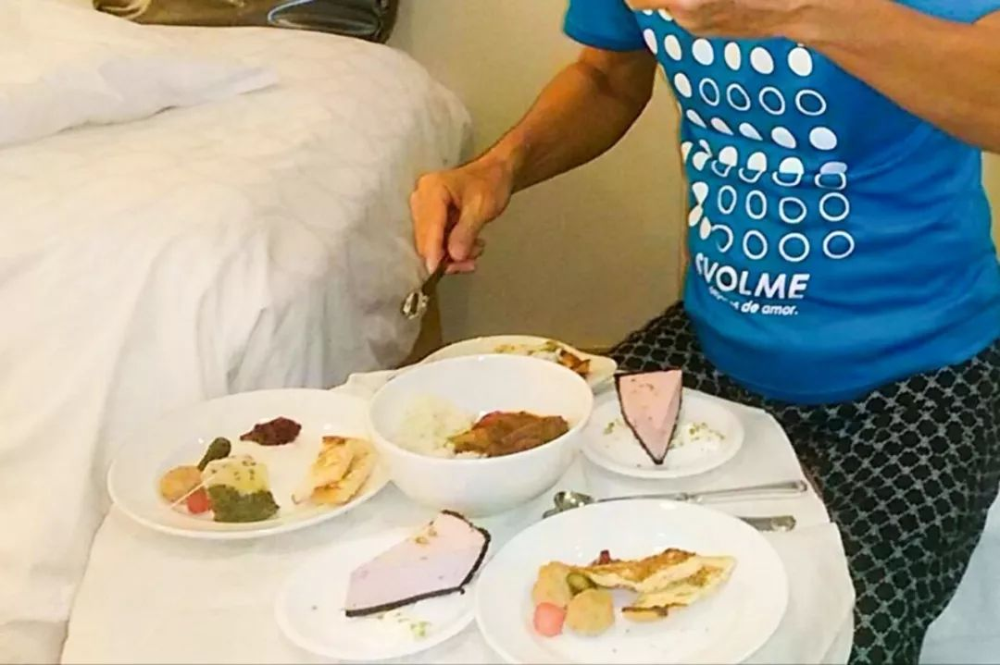
日籍网友Coco的父母在游轮上隔离
父母在船上隔离发照报平安
日本籍的Coco她的父母搭上这次游轮之旅，她虽没上船，但每天会在推特更新父母的最新情况。她说妈妈本来是开朗的人，受到隔离后心情也很低落。
Coco的父母不会用社交软件，但因为船上有网络，所以每天吃饭、放风，都会和Coco联系。一开始船上的菜色都很丰富，但隔离将近一周后，餐盘已经来不及清洁，新鲜食材应该也不够了，渐渐地换成免洗餐具、泡面、干粮。

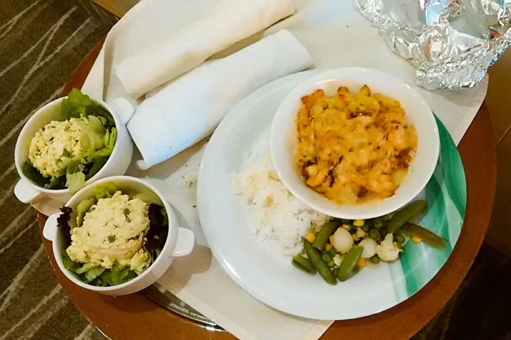

工作人员每天规律送餐：早上七点送早餐、下午两点送午餐、晚上七点送晚餐，Coco的父母很感谢工作人员，他们除了要准备餐点，也要承受乘客的情绪，每个人的态度都非常诚恳，而且很亲切，“我想大部分乘客也都可以配合隔离，互相体谅。”

乘客自己更换被单
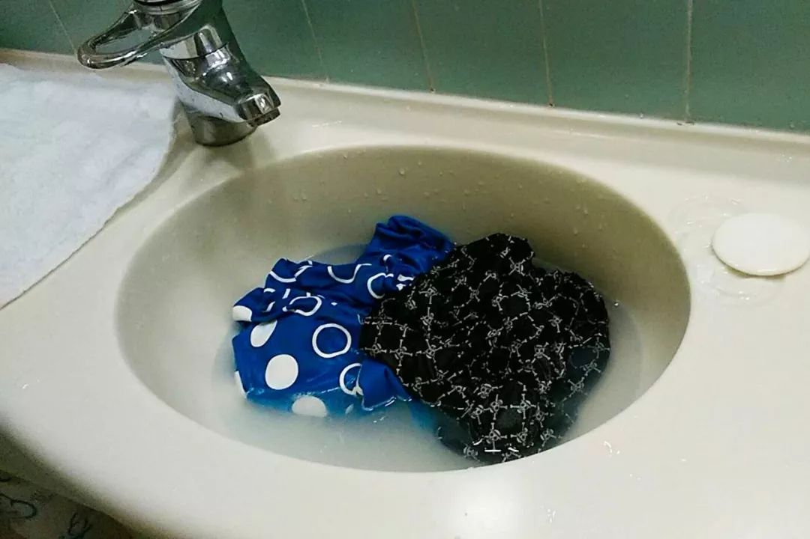
船上洗衣机已停用，乘客自行清洁衣物
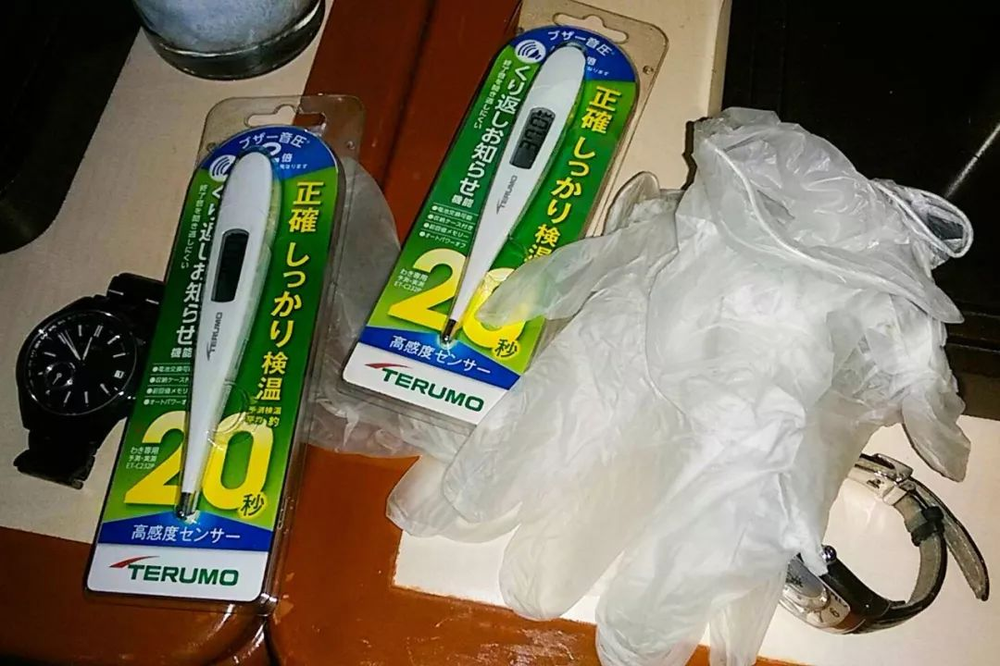
乘客每天自己量体温，如有发烧需主动通报
Coco说：“我父母住的船舱没有阳台，不过有窗户，房间配置是两张床和一张桌子，他们自己更换床单、洗衣服、偶尔做做运动，互相有个照应，我觉得还是比较幸运的，想想住在内舱房的乘客，完全没有阳光，心情会有多焦虑，希望能有咨询师能够帮帮他们。”

工作人员集体求援
船上的工作人员Binay Kumar Sarkar来自印度，他录制一段90秒短片，向印度政府求助，希望能够让印度籍的船员早日离开。
目前船上的1045位工作人员中，有132位印度人，居住环境非常狭小，4人共用一间卫浴，平时大家都一起吃饭、一起生活，每天把餐点送进客舱，对工作人员身体和心理都是很沉重的负担。
“钻石公主号就像一个小城市，已经超过10位工作人员确诊新型肺炎，但在确诊之前，大家都一起吃饭、一起活动、一起工作，难保不会造成感染。”
截止2月14日，已有两名印度籍船员确诊新型肺炎。
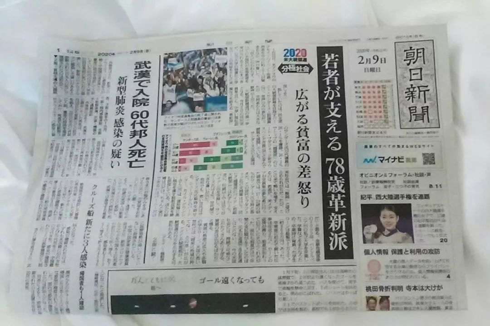
船上资讯流通慢
部分日本游客说，这些日子以来已经吃腻船上食物，多半是洋食，希望可以吃到日本的东西，前几天船上准备的味噌汤，让他们非常感谢。
不过他们也表示，目前最大问题是资讯流通不够完善，乘客都得通过广播才能知道最新情况，有时在外海收讯不好，也无法收到外界资讯，就连日本政府有意让乘客分批下船的消息，他们都是从亲友传来的讯息中得知。
“随着时间越来越长，确诊病例越来越多，真的很不安……”


确诊的218起病例中，将近30人是美国籍，他们透过视频日志记录了下船后的就医情况，令人惊讶的是，大家的共同感想是：医院待遇比船上还差……
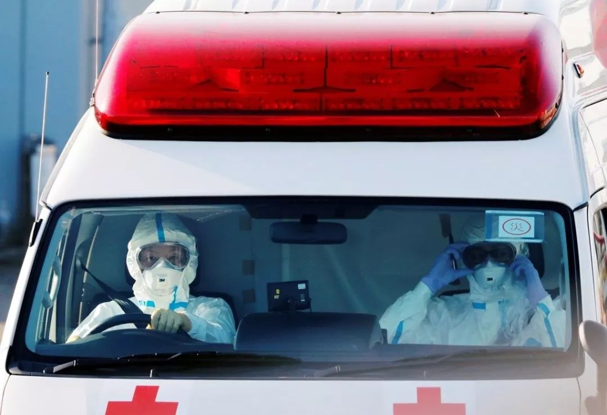
2月12日，一名70岁的美国男性乘客，因为确诊新型肺炎要被送下船，当日一通电话打来让他准备下船就医，不过规定只能带最小限度的基本日用品。收拾好背包，这位男性乘客搭上停在游轮外的接驳巴士，被送往70米开外的候船室。
接驳巴士上，窗帘紧闭，同车有几位已确诊感染的病患在等候发车。
“大约有十几个从船上下来的确诊患者，我们一直在候船室等着，这里非常冷，也没有人为我们做任何的说明，好希望能看到多一点情报。” 在候船室足足等待有一个半小时之后，这位美国乘客与另外两位患者一同坐上救护车，被送往日本埼玉县的一家医疗机构。车程足足花了三个小时。

美籍夫妻Kent和Rebecca其中一人被确诊新型肺炎
Rebecca今年35岁，和丈夫Kent一起登船旅游，2月7日被诊断出新型肺炎而下船，和她朝夕相处的Kent则在船上隔离。
“我没有明显的病征，但是会咳嗽，从接获通知到送往医院大概一个多小时。” Rebecca每天拍摄视频纪录就医生活，她提到在日本医院什么都要钱，虽然病房内有电视，冰箱，但电器都不能使用，除非有额外买卡充值；浴室里没有毛巾，如果需要的话也得付费，让她非常惊讶 “医院的待遇还比船上差。”

Rebecca在日本医院的病房中观察
夫妻俩现在每天会通视频电话，Kent说自从太太下船后，就没有人来消毒过他们同住的房间，他觉得自己迟早也会被感染上病毒。两人虽被分开，但还是乐观面对现状，Kent还幽默地跟太太炫耀自己被困在游轮上，还收到可乐，简直能高兴一整天。
Kent也在视频中说，现在船上每个人每天都自己量体温，出现异常就要通报，但他认为，应该由工作人员统一量体温才对，避免有乘客担心下船后的待遇更差而隐匿自己的身体状况。

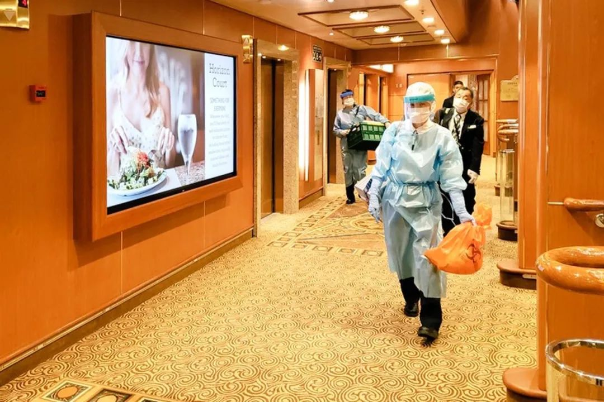
游轮上，每位乘客心中最大的焦虑就是“互相隔离真的会抑制感染吗？会不会下一个确诊的就是我”，随着每日确诊病例的增加，待在房间隔离的乘客也越来越不安，游轮上3711个人成为中国大陆以外群聚感染最严重的区域，他们面临的处境包括：
1. 船上医疗人员不足。乘客反应出现发烧，想要就医，但医务室里全部挤满人，生病的乘客看诊需等待三小时，若被认定情况轻微，还是得继续回到房间隔离。
2. 房间封闭。船舱空气不流通且干燥，除了少部分带阳台的房型，更多的是不能开窗透气的房间，甚至还有人是住在低楼层的内舱房。
3. 房间无法每日清洁。工作人员暂停房务后，乘客只能自己打扫、替换被单，无法进行消毒。
4. 资讯传达不清。即便船长每日会广播三次，但信息量难以及时更新，加上游轮网络信号不稳，无法实时了解游轮和外界的最新情报，令人很是焦虑。
5. 语言隔阂。船上乘客多为日本人，也有欧美游客、中国香港台湾地区人等，沟通不易。
6. 常备品大量消耗。乘客中大部分为老年人，需要大量降血压或是血糖等药剂，原本都是准备游船行程的使用量，现在临时被隔离，加上部分外籍乘客需要的药品，在日本难以取得，成了最大麻烦。
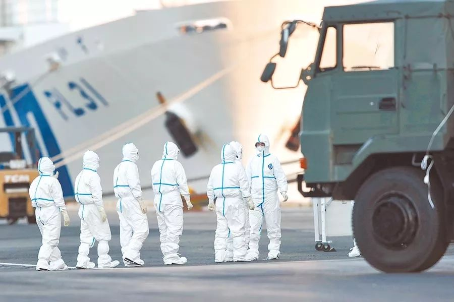
2月11日起，日本政府组成疫情预防小组上船调查，并补给500人份的药品，药品将优先提供给有紧急需求或有严重疾病的乘客。
2月12日，公告的确诊数据中，一名日本检疫人员也确诊了，他2月3日登船发放问卷，当时戴了口罩和手套，疑似因为没戴护目镜和穿全身防护衣而被感染。
2月13日，日本政府基于人道考量，决定先让高龄、有其他病症的患者优先下船，但随着在船内感染病例逐渐增加，日本政府压力也越来越大。
以日本人口1.2亿来看，全国的负压隔离病房卻只有1800床，以现在游轮上确诊病患都在当地医院治疗的情况下，若未来确诊人数超过500人、甚至1000人的话，势必会对日本医疗形成负担，目前东京附近的神奈川、埼玉、千叶等地，已经有部分医院人力吃紧。
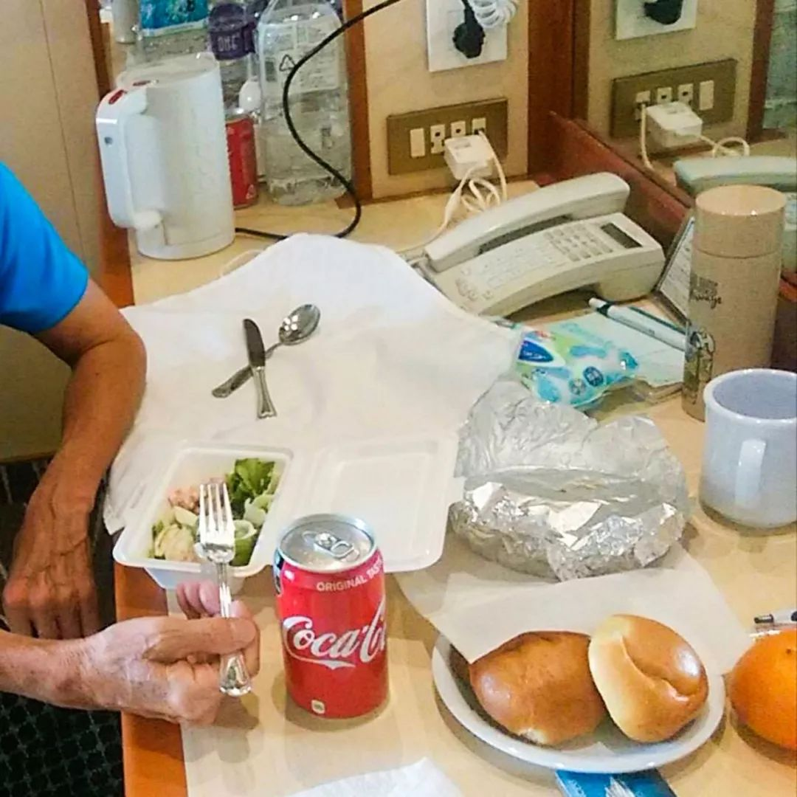
2月14日，日本政府碍于人道考量，安排有基础疾病，且状况危及的高龄者下船，一位咳血的85岁台湾乘客，和儿子同住封闭舱房，他多次咳嗽却因没发烧不能做检测，两人隔离期间多次向外求助，最后这名85岁乘客终于在14日下船治疗，随后被确诊新型肺炎，他的儿子则在游轮上继续隔离。
在钻石公主号上的游客，过半数都是超过60岁的老年人，除了自身有糖尿病、高血压外，抵抗力也偏弱，隔离期间，营养失衡也无法外出走动，缺乏运动之下，老年乘客的身体状况又比较差，若有稍微出现症状，最好能尽早治疗。

“海上孤岛式”隔离，虽然可以防止疫情继续蔓延，却也引来全球和部分日本国内人士质疑。日本的船务代理专员关家一树认为，船舶沿岸隔离是15世纪时，威尼斯为了防范鼠疫而开始采取的对策，但放在现今，隔离者的人权也是现代政府必须关注的重点，如果全员隔离，恐怕有未审先判的疑虑。
隔离日期结束前，钻石公主号上确诊人数估计还会持续攀升，因为这些乘客和船员们并未入境登陆日本，所以究竟这艘船上的确诊病例该算谁的？目前日本政府已向世界卫生组织WHO提案，把游轮乘客的病例另外计算，而非纳入日本确诊病例，以免引来日本疫情恶化的现象，影响观光经济。
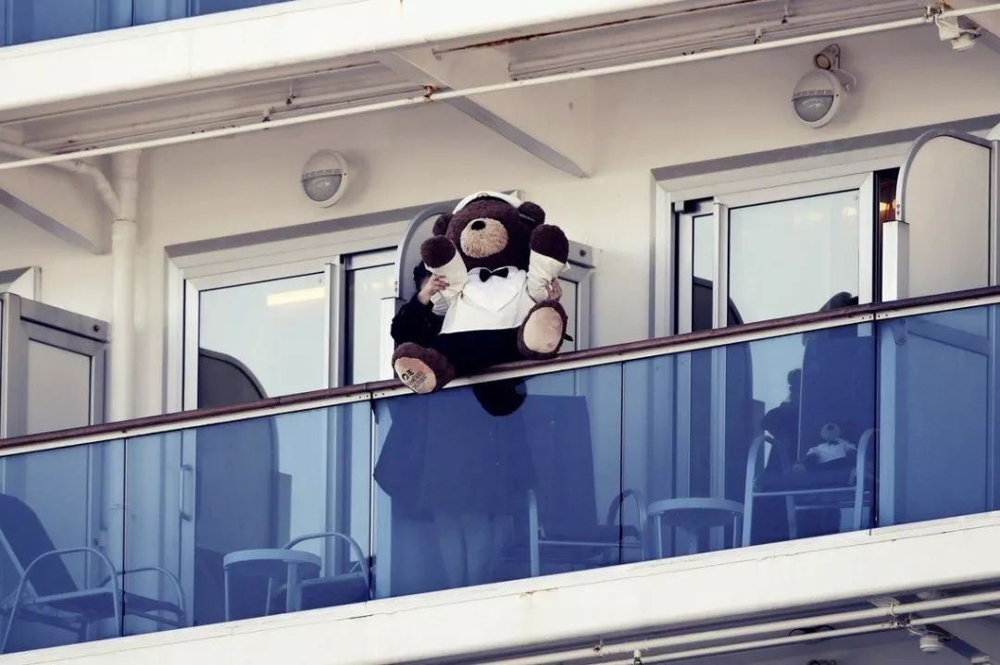
即便日本政府也想尽快进行全船的大规模检疫，但船上人数众多，恐怕隔离日期结束前，都还无法完成，因此只能先确保乘客身心健康，消除不安，尽可能加强船上医疗资源和居住环境，让乘客平安下船，以结束这场海上噩梦。
而距离那一刻，还有5天。

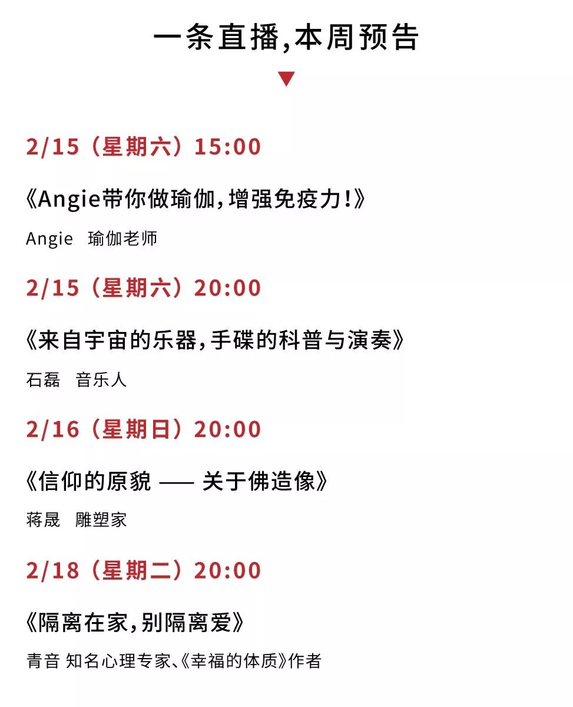
▼

原文链接 备份链接 2月5日，因船上有乘客被检验出新冠病毒感染，停靠在日本横滨港口的“钻石公主号”上的3600多人开始了14天的海上隔离。截至2月12日，这艘邮轮上的确诊感染者已达174人，远超日本本土的确诊感染总数，“钻石公主号”事件已 …
原文链接 备份链接 「钻石公主号」邮轮的离岸隔离进行到第九天，已经有174人确认感染新冠肺炎，超过了日本本土的确诊感染总数，且还在增加。一个突然来袭的新型病毒，一场突然降临的隔离，一艘无法靠岸的船。「钻石公主号」像个隐喻，它暴露了看似平滑 …
原文链接 备份链接 船上人们的焦虑也与日俱增。艾丽告诉新京报记者，“我们觉得自己不是在被隔离，而是等待着被感染。”和乘客相比，船员的住宿条件更差，艾丽住的员工宿舍两人一间，仅几平米，没有窗户。 全文6300字，阅读约需12.5分钟 1 …
原文链接 备份链接 我也是个普通人，也会恐惧。但我是一名医务工作者，同时是一名党员；我们黄冈的疫情是全国城市里除武汉之外最重的几个之一，这样的困难情况下，我们不去，谁去？必须要坚持，一定要挺住。 口述 | 陈 林 整理 | 王 煜 我是湖 …
原文链接 备份链接 【财新网】（记者 萧辉 包志明）今日（2月11日）凌晨1点，武汉市新冠肺炎疫情防控指挥部发出第12号通告，决定从2月10日起武汉全市范围内所有住宅小区实行封闭式管理，并要求对新冠肺炎确诊患者或疑似患者所在楼栋单元必须 …